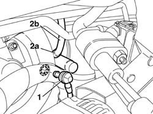
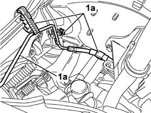
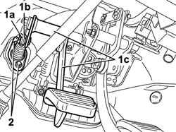
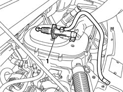

1820B21 (Pump) - MASTER CYLINER R.R. for right hand drive versions
- Path
- Procedures > 18 CLUTCH UNIT > 1820 CLUTCH RELEASE CONTROLS > 1820B HYDRAULIC CLUTCH SYSTEM > 1820B21 (Pump) - MASTER CYLINER R.R. for right hand drive versions
- Kind
- repair procedure (removal / refitting; the operation number is the code)
- Applies to
- all engines; all production periods
- Interactive page
- https://sloeber94.github.io/elrnDB-fDbl/en/#/2584572
Applies to: all engines; all production periods; only with equipment: Right hand drive
 Removing
Removing
 Refitting
RefittingOpen the bonnet
Disconnect the positive battery terminal.
3330C40 brake fluid reservoir plug - r + r
3330C30 brake fluid reservoir - r + r and wash inside
1. Disconnect the vacuum intake valve.
2. Open the spring (2a) retaining the pipe (2b) to the master cylinder and disconnect the actual pipe.

Applies to: all engines; all production periods; only with equipment: Right hand drive
1. Release the rigid section (1a) of the pipe from the master cylinder to the actuator from the retaining springs (1b) on the engine compartment bulkhead.

Applies to: all engines; all production periods; only with equipment: Right hand drive
1. Working from inside the vehicle, release the spring (1a) retaining the master cylinder push rod (1b) to the clutch pedal (1c).
2. Undo the two nuts fixing the master cylinder to the pedal assembly mounting.

Applies to: all engines; all production periods; only with equipment: Right hand drive
1. Working in the engine compartment, remove the cylinder complete with pipe connected to the reservoir.

Applies to: all engines; all production periods; only with equipment: Right hand drive
Refitting
RemovingWorking in the engine compartment, position the cylinder complete with pipe connected to the reservoir.
Working inside the vehicle, tighten the nuts fixing the master cylinder to the pedal assembly mounting to the recommended torque.
 | Fastening | Component | Ø | Value (daNm) |
|---|---|---|---|---|
- | Nut | CLUTCH FLUID MASTER CYLINDER | M6 | 0.85 |
Working inside the vehicle, secure the master cylinder push rod retaining spring to the clutch pedal.
Position the rigid section of the pipe from the master cylinder to the actuator and secure it to the retaining spring on the engine compartment bulkhead.
Connect the actuator oil supply pipe to the master cylinder and secure it using the retaining spring.
Connect the vacuum intake valve.
3330C30 brake fluid reservoir - r + r and wash inside
3330C40 brake fluid reservoir plug - r + r
0010T67 hydraulic clutch system bleed air
Connect the positive battery terminal.
Close the bonnet lid.